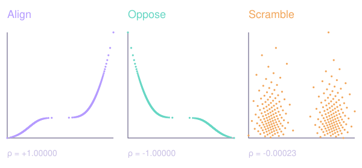

Forming field
The field could not be formed in this browser.
The coupling exhibit needs a canvas for the frozen marginals.Same x. Same y. Different pairing.
The x sample and y sample are frozen exactly. Each claim changes only the one-to-one pairing between them. X is 128 mid-quantiles of N(−1.55, 0.42²) union 128 mid-quantiles of N(+1.55, 0.42²), then sorted. Y is 256 mid-quantiles of Gamma(shape 2, rate 1), then sorted. Align pairs x-rank i with y-rank i. Oppose pairs i with 255 − i. Scramble is the fixed bijection y-rank = (99 · i + 7) mod 256, Spearman ρs = −0.00023. That map is a deterministic low-rank-correlation permutation, not a claim of statistical independence. Field transitions are a presentation crossfade of two finished pairings; in-between frames are not couplings and do not own the printed statistics. Color follows x-rank and is a token, not a third variable. Two-dimensional scatter of a finite sample. Not a copula estimator and not a data product.
The histogram above the scatterplot counts x values. The one alongside it counts y values. Both histograms survive any rearrangement of the pairings. The scatterplot records which two values actually meet.
